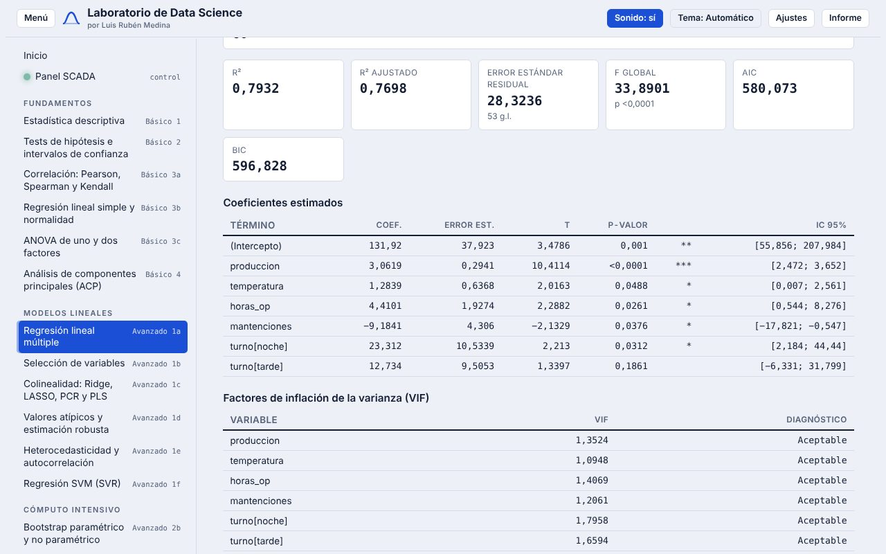
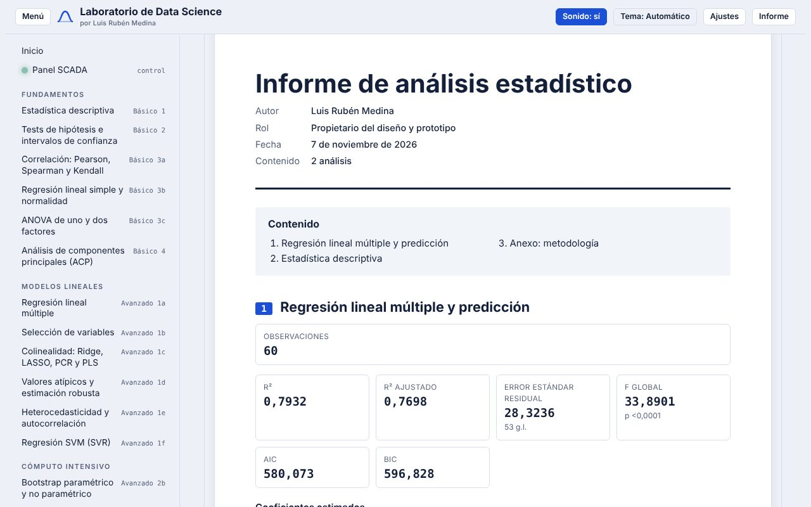
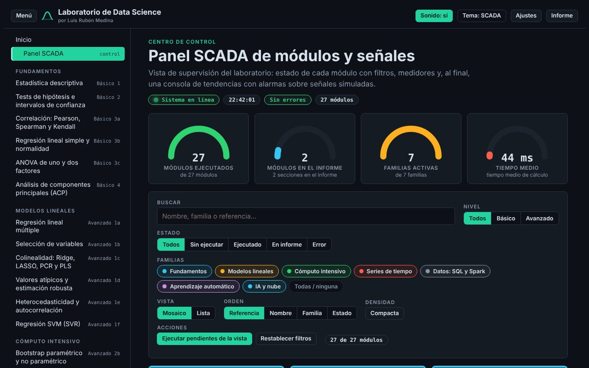

Taller de Innovación y Emprendimiento · INGO0005 · Solemne 1
Laboratorio de Data Science e Inteligencia Artificial
De los datos al informe profesional, sin programar y sin pagar licencias. Calcula, entiende e informa, en español y en tu navegador.
Luis Rubén Medina · Diseño y prototipo · Universidad San Sebastián, Facultad de Ingeniería · Santiago, Chile · Noviembre de 2026
1 · Problema
En Chile se paga caro por aprender datos, y la herramienta cuesta aparte
Y quien aprende se topa con tres barreras: el código, la licencia y las salidas numéricas que nadie explica. Se calcula sin comprender, o se comprende sin poder reportar.
Fuentes consultadas el 6 de noviembre de 2026: Formación Continua PUCV; Educación Profesional UC; Facultad de Ciencias Físicas y Matemáticas, U. de Chile; MetricGate (2026). SIES 2024: 56.427 matriculados en postítulos en Chile, +42% interanual (Educación Continua UC, 2024).
2 · Solución
Un laboratorio con 27 métodos que explica lo que calcula
- Estadística, modelos lineales, series de tiempo, aprendizaje automático, SQL/Spark y más.
- Cada módulo: reseña con fórmulas, datos propios, resultados, gráficos e interpretación en lenguaje claro.
- Un solo archivo web: sin instalar, sin cuenta, los datos no salen de tu navegador.

3 · Demostración
De los datos al informe en cuatro pasos
- Elige un método en el menú o en el panel.
- Pega tus datos o usa los de ejemplo y pulsa «Calcular».
- Agrega los resultados al informe y comenta.
- Exporta: portada, índice, resumen, conclusiones y anexo.

4 · Usuario
Quienes aprenden y trabajan con datos en Santiago
Entender métodos, verificar ejercicios y entregar informes de laboratorio. Sin licencias pagadas y con poco tiempo.
Análisis exploratorio rápido y comunicable. Sus datos son sensibles y no pueden subirse a la nube.
Mostrar un método con datos en vivo y compartir material reproducible.
Perfiles de trabajo (hipótesis) que se contrastan con las sesiones de validación planificadas para la semana 7.
5 · Valor
Gratis, privado, en español y supervisable
- Interpretable: cada resultado viene con su explicación y sus supuestos.
- Accesible: gratuito, funciona en equipos modestos y sin conexión a servidores.
- Panel tipo SCADA: estado de los 27 módulos con filtros, medidores y una consola de tendencias con alarmas (señales simuladas).
- Personalizable: 8 temas de color sólido, sonidos y movimiento opcionales.

6 · Impacto y proyección
Caso Santiago: aire que se puede analizar y explicar
Existe un conjunto de datos abierto (CC BY 4.0) con mediciones horarias de la estación Parque O’Higgins, Santiago, entre 2014 y 2020: ozono, óxidos de nitrógeno, monóxido de carbono y PM2.5, con 258.548 datos (Seguel, 2022). Es un caso de uso propuesto para series de tiempo, estadística descriptiva y bootstrap en el laboratorio.
Seguel, R. J. (2022). Air quality data of station Parque O’Higgins, Santiago from 2014-2020. PANGAEA. https://doi.org/10.1594/PANGAEA.940300
7 · Cierre
Pruébalo y cuéntame qué falta
Prototipo abierto y gratuito. Cada mejora se valida con usuarios antes de integrarse.
lms02025.github.io/CalculadoraV1Código en GitHub
Luis Rubén Medina · Diseño y prototipo · Facultad de Ingeniería, USS · Santiago, Chile